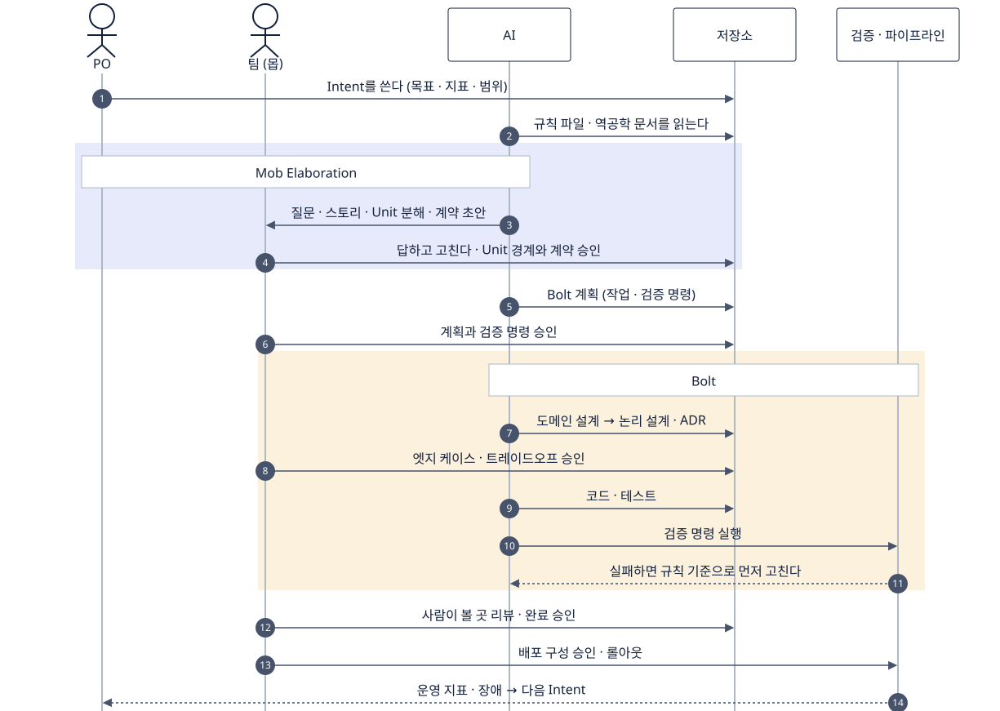

개발하면서 적용하기
AI-DLC를 들인다는 것은 도구를 설치하는 일이 아니라 일하는 방식 세 가지를 바꾸는 일이다. 결정을 앞으로 당긴다. 사람의 주의를 사람만 판단할 수 있는 곳에 모은다. 모든 산출물을 저장소에 남겨 AI의 컨텍스트로 쓴다. 이 장은 그것을 매일의 개발 흐름으로 옮긴다.
시작 전에: 기반 점검
Dedicatted 가이드의 준비도 자가 점검 12항목. 8개 미만이면 기반부터 다진다. 8~10개면 파일럿, 11~12개면 확산이다.
AI-DLC는 기존 엔지니어링 관행을 증폭할 뿐 메우지 않고 빌드가 40분 걸리면 시간 단위 Bolt는 허구가 되므로 첫 Intent보다 먼저 이것부터 본다.
기반
- 현재 수치(배포 빈도, 리드 타임, 실패율)를 Git과 파이프라인에서 뽑을 수 있다. 자기 보고가 아니다.
- 빌드와 테스트가 시간 단위 사이클을 견딜 만큼 빠르다.
- 보안 스캔이 자동으로, 계속 돈다.
- 운영에 가까운 테스트 환경이 있다.
거버넌스
- 보안 정책, 아키텍처 표준, 허용 의존성이 에이전트가 읽는 규칙 파일에 들어 있다.
- Intent에서 스토리, 테스트까지 추적할 수 있다.
- 변경을 위험 등급으로 나누는 기준이 있다.
- 위험마다 주인이 문서로 정해져 있다.
일하는 방식
- 팀이 같은 에이전트와 같은 규칙을 프로젝트 단위로 쓴다.
- 요구사항을 팀 전체가 실시간으로 함께 다듬는다.
- Unit을 한 Bolt 크기로 잡는다.
- 리뷰가 사이클 내내 계속 돈다.
팀과 역할
화이트페이퍼는 역할을 최소로 두라고 한다. 꼭 필요한 것은 PO와 개발자다. Dedicatted 가이드는 약 7명의 스크럼 팀이 2~3명짜리 AI 포드로 바뀐다고 본다. "손은 줄고 결과를 보는 눈은 늘어난다." 가장 저항이 큰 변화지만 보고된 성과가 여기서 나온다.
| 역할 | AI-DLC에서 하는 일 | 승인하는 것 |
|---|---|---|
| PO | Intent를 쓰고 Mob Elaboration에서 범위·우선순위·정책 질문에 답한다 | 스토리, Unit 경계, PRFAQ, 범위 밖 목록 |
| 개발자 | 오케스트레이터. AI의 계획을 검토하고 설계 트레이드오프를 정하고 결과를 검증한다 | 도메인 모델, ADR, 코드·테스트 시나리오, 검증 명령 |
| QA | 수용 기준이 테스트 가능한지 본다. 엣지 케이스와 실패 경로를 질문한다 | 테스트 전략, 테스트 결과 |
| 도메인 전문가 | 현업 맥락을 AI가 읽을 수 있게 구조화하고 실제 수치로 파라미터를 보정한다 | 규칙과 데이터의 현실성 |
| 퍼실리테이터 | 몹을 진행한다. 질문이 그 자리에서 답해지게 하고 결정을 저장소에 남긴다 | — |
| 보안·플랫폼 | 위험을 흡수하던 역할에서 감독하는 역할로. 규칙 파일과 자동 게이트를 소유한다 | 고위험 변경, 배포 구성 |
Intent 하나가 흘러가는 길
새 기능 하나를 예로 든 전체 흐름이다. 빨간 마름모마다 사람이 멈추고 결정한다. 결정은 저장소의 문서에 남긴다.
- Intent를 쓴다PO가 목표, 성공 지표, 범위 안·밖, 제약, 열린 질문을 한 쪽으로 쓴다. 형식은 06장에 있다.
- 컨텍스트를 깐다규칙 파일이 최신인지 확인한다. 기존 코드라면 역공학 문서를 만들고 사람이 고친다. 이 단계를 빼면 AI는 존재하지 않는 시스템을 설계한다.
- Mob Elaboration팀이 한 화면을 보며 AI의 질문에 답한다. 스토리, 수용 기준, NFR, 위험, Unit 분해, 계약 초안이 나온다. Unit 경계·계약 승인
- Bolt를 계획한다AI가 Unit마다 Bolt 계획(작업, 순서, 검증 명령)을 낸다. 먼저 만든 Unit이 계약을 내놓고 뒤 Unit이 소비하도록 순서를 잡는다. 계획·검증 명령 승인
- Bolt를 돌린다도메인 설계 엣지 케이스 → 논리 설계와 ADR 트레이드오프 → 코드와 테스트 → 자동 검증 → 실패하면 AI가 규칙 파일 기준으로 먼저 고친다.
- Bolt를 닫는다검증 명령이 통과했는지 확인하고 사람은 로직·권한·경계·동시성만 본다. 완료 승인 배운 것은 규칙 파일에 넣는다.
- 통합하고 내보낸다계약 테스트로 Unit을 붙이고 작고 되돌리기 쉬운 배포로 나간다. 배포 구성·롤아웃
- 운영에서 배운 것을 되돌린다지표, 장애, 사용자 반응을 기록하고 다음 Intent의 입력으로 쓴다. 복구 시간을 배포 시간만큼 추적한다.

Mob Elaboration 진행법
AI-DLC에서 가장 중요하고 가장 자주 무너지는 의식이다. 한 사람이 혼자 상세화하고 나머지가 나중에 검토하면 그것은 몹이 아니다. Dedicatted 가이드는 Inception만큼은 같은 방, 최소한 같은 시간대에서 하라고 한다. 아래 시간 배분은 이 문서가 제안하는 출발점이다.
| 순서 | 무엇을 | 시간 | 끝나면 남는 것 |
|---|---|---|---|
| 준비 | PO가 Intent를, 개발자가 컨텍스트(규칙, 역공학 문서)를 미리 올려 둔다 | 전날 | Intent 문서 |
| 1 | AI가 Intent를 읽고 명확화 질문을 낸다. 범위·보안 질문부터 그 자리에서 답한다 | 30분 | 질문 파일과 답 |
| 2 | AI가 스토리, 수용 기준, NFR, 위험 초안을 낸다. 팀이 지나치거나 모자란 것을 고친다 | 60분 | requirements |
| 3 | AI가 Unit 분해와 의존 순서를 제안한다. PO와 개발자가 경계를 조정한다 | 45분 | Unit 목록, 스토리 매핑 |
| 4 | Unit이 둘 이상이면 계약 초안을 함께 본다. 오류 코드와 데이터 주인을 정한다 | 45분 | 계약 초안 |
| 5 | 남은 질문의 주인과 기한을 정하고 승인 상태를 문서에 기록한다 | 15분 | 승인 기록 |
몹이 무너지는 신호
- "그건 나중에 정하죠"가 세 번 넘게 나온다. 결정할 사람이 방에 없다는 뜻이다.
- AI 초안을 읽기만 하고 고치지 않는다. 형식적 승인이 시작됐다.
- 화면을 한 사람만 보고 나머지는 각자 노트북을 본다.
- Unit이 담당자 수만큼 나온다. 경계 대신 사람을 기준으로 나눈 것이다.
샐러드랩처럼 작은 팀은 매주 정해진 시간에 몹을 하고 그 안에서 Construction까지 함께 가도 된다. "내 파트가 없으니 병목도 없다." 큰 팀은 Inception만 몹으로 하고 Construction은 Unit별로 흩어진 뒤 계약 테스트로 다시 모인다.
Bolt 하나 굴리기
Bolt는 시간~일 단위의 짧은 구축·검증 사이클이다. 처음에는 2~3일로 잡고 파이프라인이 빨라질수록 줄인다. Bolt마다 계획 파일 하나를 둔다. AI가 쓰고 사람이 승인한다.
# Bolt 2 — U-2 예약: 생성과 충돌 방지
상태: approved · 승인: 개발 리드 · 2026-11-21
## 목표
US-1 빈 회의실을 골라 예약한다 (R1.1 ~ R1.3, NFR-2)
## 작업
- [ ] T010 TimeSlot 값 객체와 겹침 판정 단위 테스트
- [ ] T011 Reservation 애그리거트 불변식 (30분 단위, 2시간, 운영 시간)
- [ ] T012 배타 제약 마이그레이션 (ADR-002)
- [ ] T013 POST /reservations — 201 · 409 · 422
- [ ] T014 같은 슬롯 동시 요청 20개 중 1개만 성공하는 통합 테스트
## 검증 명령 (사람이 승인한 것. 바꾸려면 다시 승인)
./gradlew test --tests '*Reservation*' && ./gradlew integrationTest
## 사람이 볼 곳
- T012 잠금 범위와 마이그레이션 롤백
- T013 다른 사람 예약 ID로 접근할 때의 응답
## 끝
검증 명령 종료 코드 0 + 위 두 곳 리뷰 + 배운 것 규칙 파일 반영하루의 리듬은 CJ올리브영 워크숍을 따르면 된다. 아침에 전날 Bolt를 짧게 회고하고 Bolt를 진행하고 끝에 검증 결과와 사람이 볼 곳만 리뷰한다. 통합 문제가 생기면 화면 캡처나 테스트 진행 상황을 마크다운으로 정리해 AI에게 컨텍스트로 준다.
코드를 직접 고치고 싶을 때는 설계를 먼저 고친다. v1 규칙의 "Never Vibe Code"다. 생성된 코드를 손으로 고치면 설계 문서와 코드가 어긋나고 다음 생성이 그 수정을 덮어쓴다.
일의 크기와 위험으로 깊이 고르기
모든 일에 전체 절차를 돌리면 문서가 쌓여 오히려 에이전트의 컨텍스트를 오염시키고 승인은 형식이 된다. 03장에서 본 2026년의 경고다. 깊이는 일의 크기와 위험 두 가지로 고른다.
| 일 | 거칠 것 | 남길 것 | 승인 | v2 스코프 |
|---|---|---|---|---|
| 오타, 설정 한 줄 | AI-DLC를 쓰지 않는다 | 커밋 | PR | — |
| 버그 수정 | 재현 → 원인 → 수정 → 회귀 테스트 | 현재·기대·바뀌면 안 되는 동작 | 수정 계획 | bugfix |
| 작은 기능 (Unit 하나) | 요구사항 → 설계 → 작업 → 구현 | requirements, design, tasks | requirements, design, 완료 | express · classic |
| 큰 기능 (Unit 여럿) | Mob Elaboration → Unit·계약 → Unit별 Bolt | 위 + Unit 목록, 계약, Bolt 계획 | 위 + Unit 경계, 계약 | feature |
| 새 제품 | Ideation부터 전체 | 위 + Intent, 범위 문서, 결정 로그 | 위 + 범위, 착수 승인 | mvp |
| 규제·보안 대상 | 전체 + 보안·컴플라이언스 검토 | 위 + 위협 모델, 감사 기록 | 모든 단계 | enterprise · security-patch |
크기와 별개로, 승인의 무게는 위험으로 정한다. Thoughtworks가 제시한 위험 등급별 감독이다. 사람이 평가할 수 없는 diff를 습관적으로 승인하는 것(Human-in-the-loop theater)보다, 등급을 나눠 높은 곳에 주의를 모으는 편이 안전하다.
| 등급 | 해당하는 변경 | 사람이 하는 일 |
|---|---|---|
| 낮음 | 내부 리팩토링, 테스트 추가, 문서, 화면 문구 | 자동 검증 통과만 확인 |
| 중간 | 새 API, 새 화면, 스키마 추가(되돌릴 수 있음) | 계획 승인 + 사람이 볼 곳 리뷰 |
| 높음 | 권한·인증, 결제, 개인정보, 되돌릴 수 없는 마이그레이션, 동시성, 외부 공개 API | 계약·설계·코드를 모두 사람이 리뷰하고 담당자가 이름을 걸고 승인 |
저장소에 깔 것
AI-DLC의 컨텍스트 메모리는 결국 저장소다. 세션이 바뀌고 도구가 바뀌어도 이어서 일할 수 있는 이유가 여기 있다. CJ올리브영은 첫날 오전을 통째로 규칙(스티어링) 설정에 썼고 그것이 3일의 생산성을 좌우했다고 했다.
규칙 파일에 넣을 것
- 아키텍처 규칙: 레이어, 의존 방향, 컨텍스트 사이 참조 방법
- 보안 정책: 인증·인가, 입력 검증, 비밀값, 로그에 남기면 안 되는 것
- 허용 의존성과 버전, 금지 패턴
- 코딩 규약, API 표준(공통 응답, 오류 코드, 버저닝)
- 반드시 지켜야 할 레거시 규칙: "기존 A 시스템의 B 규칙은 유지한다"
- 검증 명령: 무엇을 돌리면 "끝"인가
- 질문 규약: 모르면 추측하지 말고 묻는다, 질문은 파일로, 선택지 + 권장안
모델에 맡길 것과 하네스로 강제할 것
Claude Code 공식 문서의 구분을 그대로 쓴다. 프롬프트, 규칙 파일, 스킬은 모델이 판단하는 지시라서 따르지 않을 수 있다. hooks, 거부 규칙, CI, 브랜치 보호는 하네스가 강제하는 지시다. 예외가 없어야 하는 규칙은 아래처럼 하네스로 옮긴다.
| 규칙 | 강제 수단 |
|---|---|
| 승인 전에는 다음 문서를 만들지 않는다 | 상태 필드 검사 스크립트, 생성 스크립트가 앞 단계 승인을 확인 |
| 레이어 의존 방향 | 구조 테스트(ArchUnit 등), 린터 |
| 완료는 검증 명령 통과 | 단일 검증 게이트 스크립트, Stop hook, CI 필수 체크 |
| 비밀값 커밋 금지 | pre-commit 스캔, CI 시크릿 스캔 |
| 사람이 실제로 승인했다 | v2의 사람 존재 확인 훅, 또는 PR 승인과 브랜치 보호 |
리뷰를 바꾼다
생성량이 늘면 "다 만든 뒤 PR 리뷰"는 버티지 못한다. RPI의 원리대로 코드보다 계획을 리뷰하고 자동 게이트가 할 수 있는 것은 자동 게이트에 맡긴다.
| 전 | 후 |
|---|---|
| 사이클 끝에 PR 전체를 리뷰한다 | 계획과 설계를 먼저 승인하고 코드는 사람이 볼 곳만 본다 |
| 스타일·포맷을 사람이 지적한다 | 포매터·린터가 막는다 |
| 정상 경로가 돌아가는지 본다 | 엣지 케이스, 경계, 권한, 동시성, 실패 경로를 본다 |
| 리뷰어 한 명이 모든 것을 본다 | 위험 등급에 따라 리뷰 깊이가 다르다 |
| 문서는 나중에 쓴다 | 문서는 변경과 함께 생성하고 리뷰 대상에 포함한다 |
AI 코드는 겉으로 깔끔해서 예외 경로의 잘못이 잘 보이지 않으므로 리뷰어가 회의적인 태도를 잃는 것이 가장 위험하다.
무엇을 재나
Dedicatted 가이드의 KPI 세트. 서로 견제하는 지표라 하나만 좋게 만들 수 없다.
| 지표 | 역할 |
|---|---|
| 배포까지의 평균 시간 | 핵심 지표. 견적에 쓰는 수치 |
| 평균 복구 시간 | 속도만 올리는 것을 견제 |
| 실패한 배포 비율 | 품질 견제 |
| 심각도별 이벤트 | 신호는 총량보다 심각도 구성 |
| 기술 부채 수준 | "빠른 시멘트" 견제 |
| 고객 NPS | 결과가 실제로 쓸모 있었나 |
세 가지 규칙을 지킨다. 바꾸기 전에 기준선을 잡는다. 수치는 Git과 파이프라인에서 뽑고 자기 보고는 받지 않는다. 결과는 팀과 공유한다. 업계에 공개된 생산성 주장은 -20%부터 1,000%까지 흩어져 있으니, 자기 파이프라인의 수치만 믿는다.
도입 순서
Dedicatted 가이드의 90일 로드맵. 2단계를 건너뛰는 것이 파일럿에서 멈추는 가장 흔한 원인이라고 한다.
- 1~2주: 정렬AI-DLC가 애자일과 어떻게 다른지, 작은 포드로 가는 조직 변화가 무엇인지 리더와 합의한다. 누군가 이미 신경 쓰는 비즈니스 성과에 연결한다.
- 2~4주: 기준선과 기반Git과 파이프라인에서 현재 수치를 뽑는다. 빌드 시간, 테스트 충실도, 보안 게이트를 점검하고 고친다.
- 4~6주: 도구와 규칙표준 에이전트와 규칙 파일을 정하고 실제 정책으로 첫 규칙 파일을 쓴다. 시니어 챔피언 2~3명을 세운다. 처음 익힐 때는 v2
express로 15분짜리를 돌려 보고 게이트에서 일부러 수정 요청을 해 본다. - 6~10주: 실제 코드로 파일럿한 팀, 자기 저장소, 진짜 작업으로 2~3일짜리 Bolt를 돌리고 기준선과 비교한다. 첫 과제는 경계가 분명하고 위험이 중간인 기능이 좋다.
- 10주 이후: 근거로 확산파일럿 수치를 근거로 팀을 늘린다. 규칙 파일은 태그 붙은 릴리스로 고정하고 워크플로 산출물은 버전 관리한다.
이 킷(harness-starter-kit)에서는
이 저장소가 까는 SDD(S1~S8)는 AI-DLC와 같은 뿌리를 가졌다. 승인 상태가 정확히 approved일 때만 다음 문서를 만들고 모르는 것은 [NEEDS CLARIFICATION]으로 남기고 완료는 단일 검증 게이트(scripts/verify.sh)와 사용자 검수로 판정한다. AI-DLC의 Construction에 해당하는 부분은 대부분 이미 있고 비어 있는 곳은 그 앞(Intent와 Unit 분해)과 뒤(운영 피드백)다.

| AI-DLC | 이 킷 | 상태 |
|---|---|---|
| Intent | requirements §1 Introduction · §2 범위(In/Out scope)가 이슈 하나 단위로 일부를 맡는다 | 여러 이슈를 묶는 상위 문서 없음 |
| Mob Elaboration | S1 분석 · S2 기획 — /hx-specify · /hx-clarify · /hx-checklist | 명령은 있음. 팀이 함께 돌리는 의식은 운영 규칙으로 정해야 함 |
| 스토리 · 수용 기준 | requirements §5 User Story(P1~P3), EARS R#.#, Edge Cases, §6 SC-### | 있음 |
| NFR · 위험 | requirements §7 NFR, §8 제약·가정 | 위험 레지스터 칸 없음 |
| 명확화 질문 | /hx-clarify: 한 번에 하나씩, 최대 5개, 객관식 + 권장안, 답은 ## Clarifications에 기록 | 있음. 채팅 방식이라 몹에서 여럿이 답하기엔 파일 방식이 낫다 |
| Unit | 제품 폴더 <slug>-specs/ = 바운디드 컨텍스트, 이슈 = 변경 단위 | Intent 하나를 여러 이슈로 나누고 순서를 정하는 단계 없음 |
| Contract Design | design §6 API Design(operation별 계약, OpenAPI 스냅숏) | 이슈 안에서는 있음. 이슈 사이 계약을 먼저 승인하는 단계 없음 |
| Domain · Logical Design | S3 design — Constitution Check, §4 흐름·시퀀스·상태, §7.1 인덱스, §7.3 동시성, §14 ADR, §16 추적 매트릭스 | 있음. AI-DLC 자료보다 더 구체적 |
| Bolt | S4 tasks/active.md의 User Story별 Phase, [P] 병렬 표시, 의존 그래프 | 있음. 이름만 다르다 |
| 검증 명령 고정 | scripts/verify.sh 단일 게이트, tasks의 DoD 체크 | 있음 |
| 승인 게이트 | requirements·design 상태 approved, tasks check → completed는 사용자 승인 뒤에만 | 있음. "사람이 실제로 승인했나"는 스크립트로 강제하지 못한다 |
| 컨텍스트 메모리 | .agents/docs/ 기록 시스템, decisions/ ADR, docs/features/ 기능 문서(S7) | 있음. OpenSpec처럼 "이슈 = 변경, 기능 문서 = 현재 진실" |
| Operations 피드백 | tech-debt-tracker.md | 운영 지표·장애를 다음 이슈로 되돌리는 흐름 없음 |
보강안
아래는 이 문서의 제안이다. 아직 킷에 구현되지 않았다.
- Intent 문서와 분해 단계. 제품 폴더 아래에 Intent 문서를 두고 Intent 하나에서 이슈 키 여러 개와 의존 순서(DAG)를 만드는 단계를 S1 앞에 둔다. 이슈마다 requirements가 어느 Intent에서 왔는지 링크한다.
- 계약 이슈 먼저. Unit(이슈)이 둘 이상이면 계약만 다루는 이슈의 design §6을 먼저
approved로 만들고 소비하는 이슈는 그 계약을 참조한다. - 파일 기반 질문 옵션.
/hx-clarify에 질문 파일 모드(선택지 + 기타 +[Answer]:, 답할 직무 표시)를 더해 몹에서 여럿이 동시에 답하게 한다. 답은 지금처럼## Clarifications에 반영한다. - 위험 레지스터 칸. requirements §7·§8 옆에
| RISK-# | 위험 | 가능성·영향 | 대응 | 담당 |표를 둔다. - 승인 기록. 상태를
approved로 바꿀 때 누가, 언제, 어떤 말로 승인했는지 이슈 폴더에 덧붙이기만 하는 기록을 남긴다. "사람이 승인했나"를 사후에라도 확인할 수 있게 된다. - 운영 피드백 루프. 배포 뒤 지표와 장애를 기록하는 칸을 tasks 결과나 기능 문서에 두고 거기서 다음 이슈를 여는 경로를 정한다.
지금 바로 해 볼 수 있는 것
킷을 고치지 않고도 AI-DLC식으로 일할 수 있다. 큰 기능이면 먼저 팀이 모여 이슈 여러 개의 requirements를 한 자리에서 /hx-specify와 /hx-clarify로 만든다(Mob Elaboration). API를 주고받는 이슈는 design §6부터 승인한다(계약 먼저). 각 이슈의 tasks Phase를 Bolt로 보고 verify.sh 통과와 사용자 검수를 완료 조건으로 둔다.
이 장의 출처
- Dedicatted, 「From AI-assisted to AI-driven」: 준비도 점검, 포드, 90일 로드맵, KPI, 리뷰 모델
- AI-DLC 화이트페이퍼 한국어본: 원칙 8(역할), 부록 A 프롬프트
- CJ올리브영, 샐러드랩 사례
- awslabs/aidlc-workflows: v2 스코프, 사람 존재 확인, v1 "Never Vibe Code"
- Claude Code best practices, Thoughtworks, risk-tiered human oversight
- 이 저장소: analysis/03-sdd-workflow.md, SDD 템플릿(
plugins/harness-kit/skills/hx-bootstrap/templates/common/agents-docs/_spec-templates/)